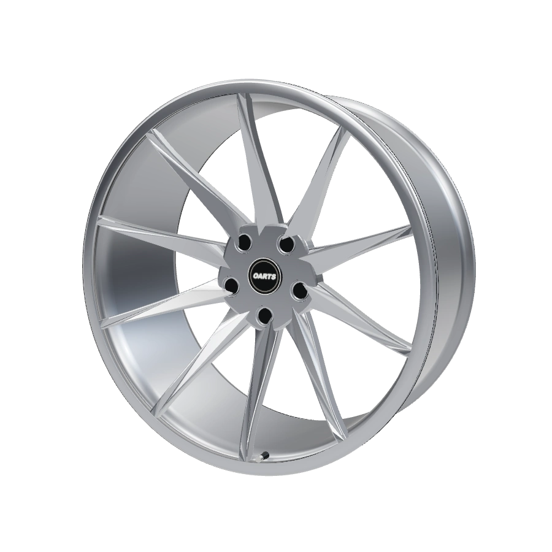
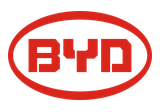

Podle konkrétního vozu.
Potřebnou nosnost kol potvrdíme podle podkladů k tvému autu a zatížení náprav.
OARTS / Kola pro elektromobily
Dej svému elektroautu vlastní styl. Vyber model, navrhni design kol a pošli nezávaznou poptávku. Nosnost a rozměry ověříme pro konkrétní provedení tvého vozu.
Od výběru designu po ověření parametrů. Společně.

Potřebnou nosnost kol potvrdíme podle podkladů k tvému autu a zatížení náprav.
Ověříme průměr, šířku, ET, rozteč a středový otvor pro konkrétní provedení.
Porovnej designy, barvy a povrchy v konfigurátoru a připrav návrh pro konzultaci.
Vybrané čistě elektrické modely
Model předvybereme v konfigurátoru. Rok, karoserii a konkrétní provedení doplníš v dalším kroku.
26 vybraných modelových řad · 12 značek

Vyber jinou značku nebo nám svůj vůz popiš. Konkrétní provedení spolu ověříme.
Zadat vlastní elektroauto ↗Přehled obsahuje vybrané čistě elektrické modelové řady. Pokud své auto nevidíš nebo má tvoje řada více druhů pohonu, otevři úplný katalog v konfigurátoru a označ „Máte elektroauto?“. Výběr vozu ani náhled designu nepotvrzuje kompatibilitu kol.
Čistě elektrický pohon těchto řad jsme ověřili v podkladech výrobců. Odkazy jsou u každé značky. Ověření se týká zařazení modelové řady; rozměry, nosnost a vhodnost konkrétního kola posuzujeme samostatně pro tvůj vůz.
Od nápadu ke konkrétní nabídce
Před výběrem kol
Vhodnost závisí na konkrétním voze a provedení kola. Při návrhu ověřujeme nosnost, montážní rozměry a prostor pro brzdy. Přesný návrh potvrdíme před výrobou.
Začni značkou, modelem, rokem a karoserií. Pro přesné ověření tě můžeme požádat o VIN nebo údaje z dokumentace vozu, zejména zatížení náprav a schválené rozměry.
Konkrétní změnu dojezdu bez měření neslibujeme. Výsledek závisí na kombinaci kola a pneumatiky, rozměrech i způsobu používání vozu.
Ano. Otevři úplný katalog v konfigurátoru, označ elektroauto a uveď přesný model nebo chybějící provedení do poznámky. Případně nás kontaktuj a výběr probereme spolu.
OARTS / Tvůj další krok
Vyber elektroauto a připrav návrh kol. Přesné parametry doladíme společně.